Dr. Okolie gives a faculty colloquium at Bucknell University
Dr. Okolie presented a faculty colloquium at Bucknell University titled One Solution Two Problems: A Systems Approach to Spent Lithium-Ion Battery Recycling.
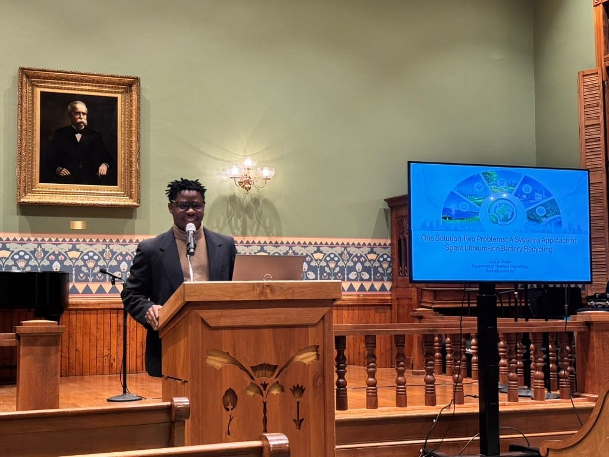
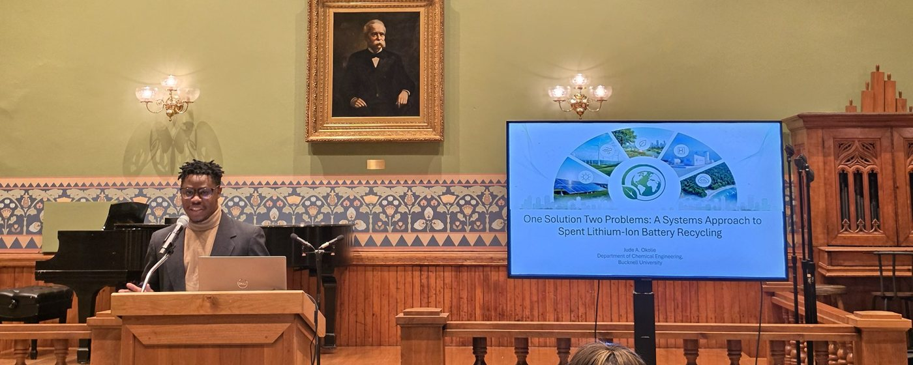
Awards, grants, conference presentations and new publications.
Dr. Okolie presented a faculty colloquium at Bucknell University titled One Solution Two Problems: A Systems Approach to Spent Lithium-Ion Battery Recycling.


The SETD lab has acquired a high-precision, temperature-controlled digital shaker. The new instrument will support larger-scale synthesis of green solvents in the lab.

At the 2026 AIChE Annual Meeting, Dr. Okolie presented JQUIZZ: An Intuitive AI-Driven, Practice-Based App for Teaching ChemE Differential Equations (paper 488e) in the Education Division session “Fostering Engineering Judgement with AI.” JQUIZZ is a mobile and web app for advanced differential equations courses for chemical engineers. It offers short, targeted practice problems that adapt to each student's performance and are drawn from real engineering scenarios such as reactor dynamics, heat transfer and material balances. Its built-in AI engine generates problems, gives step-by-step solution guidance and evaluates answers in real time; tested on 350 solved differential equation problems, it reached about 90% solution accuracy. Instructor dashboards support automated assessment and tracking of learning gains. Try the JQUIZZ app →

Congratulations to Omuhle Ndhlovu, who won second place in the student poster competition at the 2026 AIChE Annual Student Conference in Minneapolis for her poster, Comparative Assessment of Biochar and Hydrochar from Food-waste.
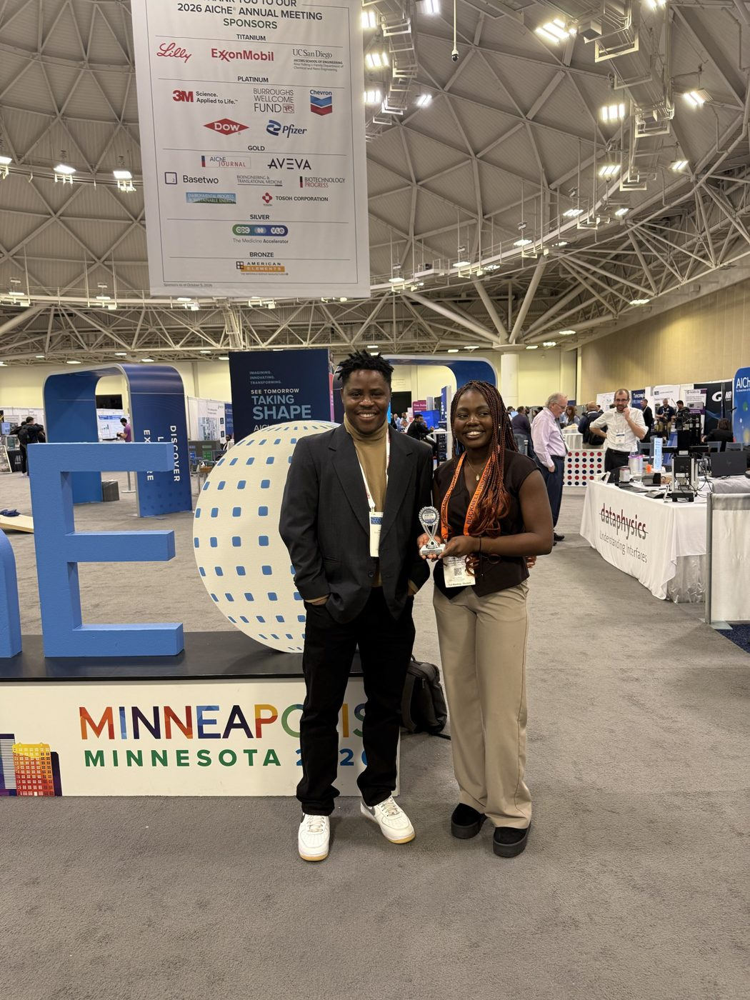
Several SETD students presented posters at the recently concluded 2026 AIChE Annual Student Conference and Annual Meeting in Minneapolis, Minnesota:

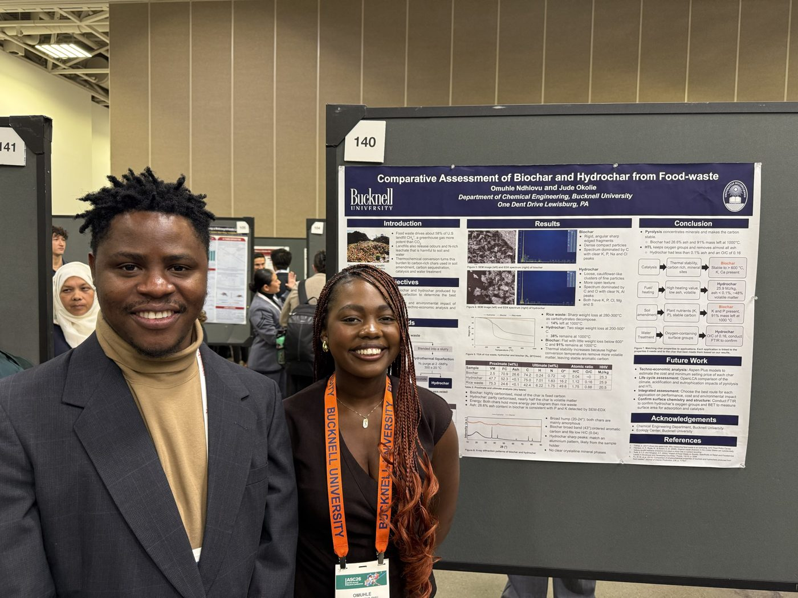

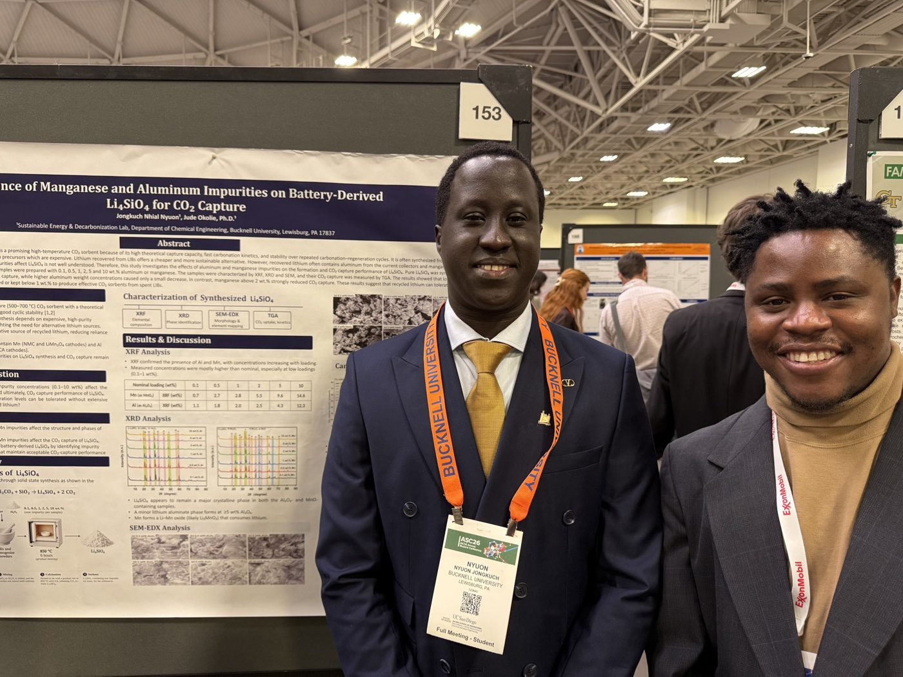
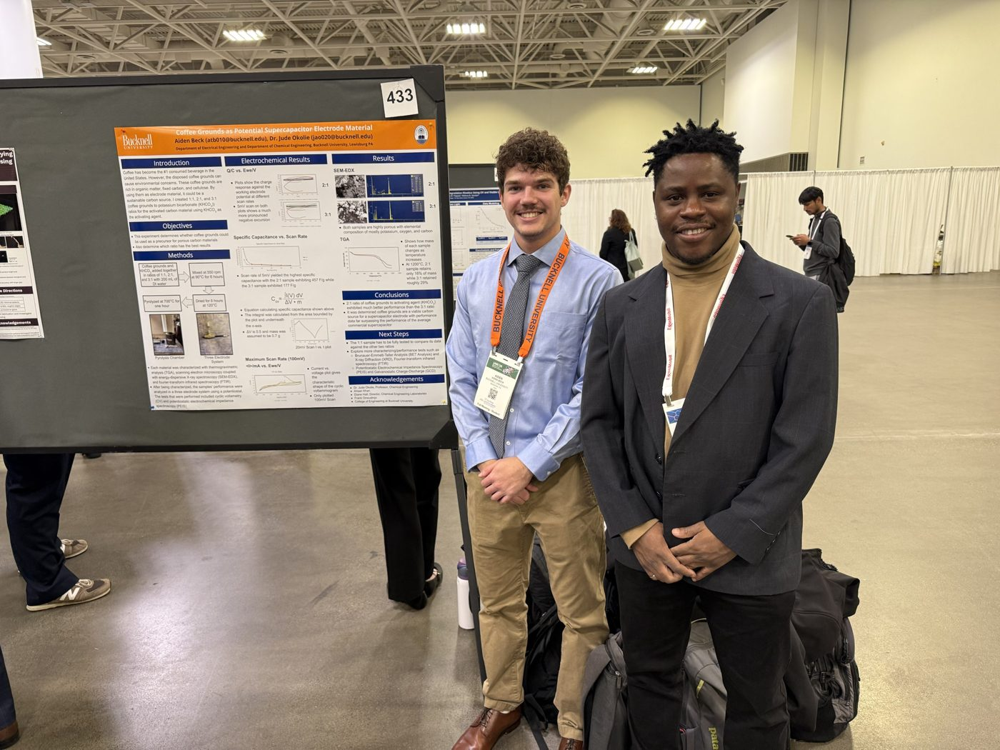
Frank Onwudinjo, Reed Muir, Ahsan Khan and Dr. Okolie published a study in Chemical Engineering Journal on how cathode delamination affects the recovery of cathode materials from mixed-chemistry spent lithium-ion batteries and their conversion into lithium orthosilicate (Li₄SiO₄) sorbents for CO₂ capture. The study compares delamination strategies including pyrolysis at different temperatures, NaOH treatment and NMP. It is the second publication from Frank's M.S. thesis.
Dr. Okolie received an IDEA Grant from Bucknell University for the project Artificial Intelligence–Guided Design of Novel Deep Eutectic Solvents for Critical Metal Recovery from Spent Lithium-Ion Batteries, which ran from May to July 2026.

Dr. Okolie received a Library & Information Technology (L&IT) Summer Research Grant from Bucknell University for the project GIS Screening of Suitable Sites for Spent Alkaline Battery Upcycling to Functional Energy Storage Materials, which ran from May to July 2026.

Dr. Jude Okolie is one of the 2026 awardees of the American Chemical Society (ACS) Committee on Environment and Sustainability (CES) Award for Incorporating Sustainability into Chemical Education. The international cohort of educators was recognized for creative classroom and laboratory innovations, including systems thinking, environmental and risk assessment, green chemistry, and engagement through gamification. Awardees will present their work in a dedicated symposium at the Spring 2027 ACS meeting in New Orleans.

Dr. Okolie was awarded an American Chemical Society Petroleum Research Fund (ACS-PRF) grant for the project Metal–Support Interactions and Coke Deposition Mechanisms in Ni–Co–Fe Catalysts for Dry Methane Reforming. The project runs from January 2027 to December 2028.

Published in Process Safety and Environmental Protection (Onwudinjo, Giwa, Jolaoso, Okoye and Okolie). The study integrates techno-economic analysis, GIS-based spatial analysis and life cycle assessment to evaluate upcycling spent lithium-ion batteries into a CO₂ capture adsorbent, using the U.S. Mid-Atlantic region as a case study.
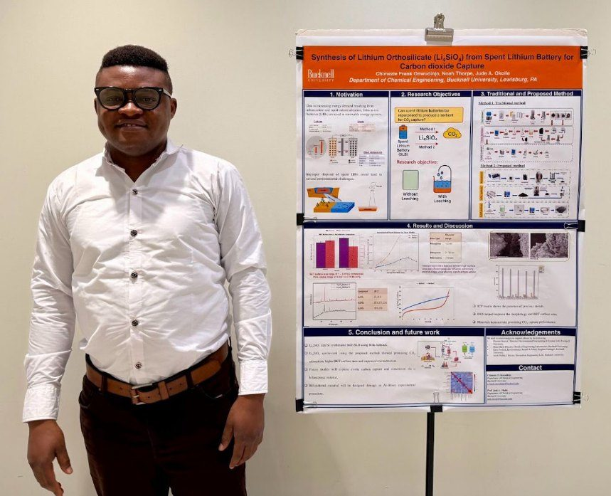
Congratulations My Ly, for the first place Poster Award during the AIChE 2025 conference in Boston.
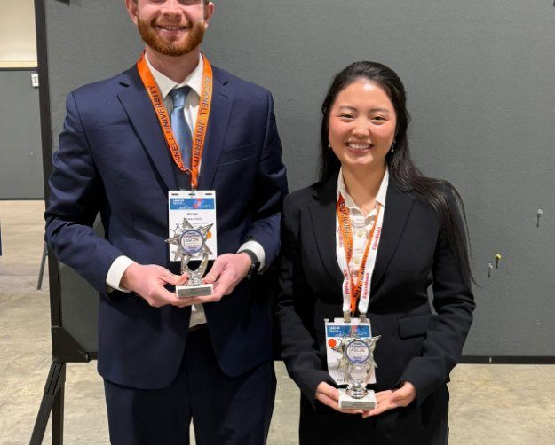
Bucknell University featured Dr. Okolie's work using artificial intelligence to evaluate feedstocks for biodiesel production.
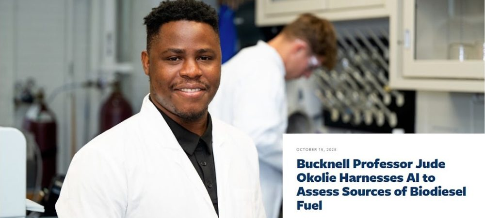
Dr. Okolie received a grant from the College of Engineering at Bucknell University for the project Pathways for the Recovery of Lithium, Nickel and Cobalt from Spent Lithium Batteries (January to December 2025).
Dr. Okolie was awarded an industry grant by The Catalyst Group Resources for the project entitled “Technology evaluation of waste biomass gasification to sustainable aviation fuel.”

Frank Chimezie presented his work on repurposing spent lithium batteries as CO₂ adsorbents during the Kalman Symposium at Bucknell University.
Published in Education for Chemical Engineers (Okolie, Barakat, Smith, Ogbaga, Iorember and Jellason). The study proposes a team-based activity that aids understanding of the international relations and cooperation needed to achieve the SDGs, and introduces the water-waste-energy nexus. The activity, including the comics, was tested with students from universities in Africa and England grouped into eight simulated countries with distinct resources and challenges. Participants from Africa focused more on urgent local issues such as zero hunger (SDG2), quality education (SDG4) and clean water (SDG6), while UK participants focused more on global, policy-oriented issues such as clean energy (SDG7), sustainable cities (SDG11) and climate change (SDG13). The activity significantly enhanced students' understanding of the SDGs, global challenges and the water-energy nexus.
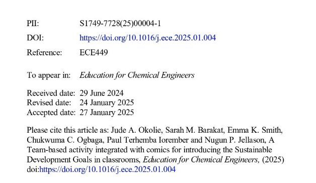
Congratulations to Brooke Rogachuk for winning first place in the Engineering Pathways section at the University of Oklahoma Undergraduate Research Day. Brooke presented her work on the comparative assessment of pyrolysis and gasification-Fischer Tropsch processes for sustainable aviation fuel production from waste tires. Her dedication and pioneering research are paving the way for more sustainable solutions in aviation fuel.
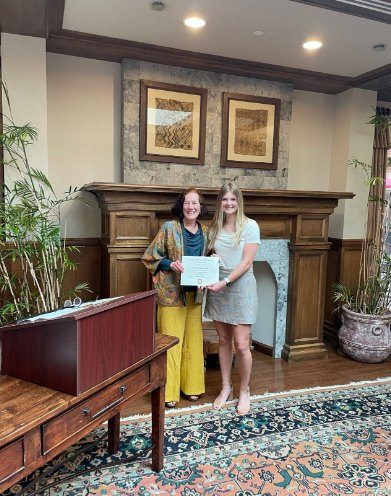
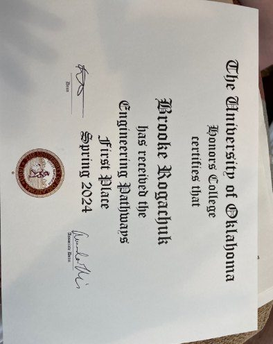
Congratulations to Dr. Jude Okolie for winning the MDPI Encyclopedia 2023 Outstanding Contributor Award.
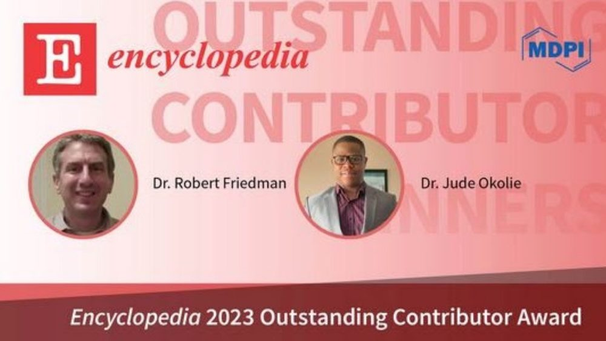
Every year, approximately 1.4 billion waste tires are produced, typically ending up in landfills or incinerated. Yet waste tires are a promising source of energy and energetic materials thanks to their low moisture content and high heating value. This study analyzes methods for converting waste tires into biofuels, green chemicals, and innovative materials, includes a bibliometric analysis of research trends, compares traditional management strategies, and proposes a new integrated waste tire biorefinery combining thermochemical and biological processes.
The design combines a catalytic plasma methane pyrolysis unit with steam char gasification, combustion, and biomethanation for onsite hydrogen production where pipeline infrastructure is lacking. The levelized cost of hydrogen ranged from 1.3 to 1.47 US$/kg, net present value ranged from 3.76 to 4.35 M US$, and an optimized methane conversion of 76.8% was obtained.
An overview of thermochemical and biological conversion pathways for transforming human- and animal-derived waste into valuable resources, covering physicochemical properties, nutrient recovery strategies, and a bibliometric analysis of research trends and knowledge gaps.
Dr. Okolie delivered a guest lecture entitled “Assessing the Economic and Environmental Impacts of Different Integrated Biomass Conversion Processes: Current Status and Future Prospects” at the Sustainable Bioenergy and Processes Conference, 12–15 December 2022, Cape Town, South Africa.
This study investigated the economic viability of three renewable propylene glycol production pathways and showed that the source of hydrogen has a significant impact on their economic feasibility.
A review of recent advances in using ozone for decontamination in the food, water treatment, pharmaceutical, textile, healthcare and medical sectors, emphasizing key parameters affecting microbial reduction efficiency and ozone stability.
Corncob was converted to activated carbon by K₂CO₃ impregnation and activation at 500–800 °C, giving surface areas of 489–884 m²/g. A specific capacitance of 325 F/g was reached at 5 mV/s, with 88% energy retention and 100% coulombic efficiency after 10,000 cycles.
A review of nanomaterials for removing contaminants that conventional treatment struggles with, focusing on carbon nanotubes, graphene-based nanosheets, fullerenes, and silver, copper and iron nanoparticles, with challenges and prospects for their use.
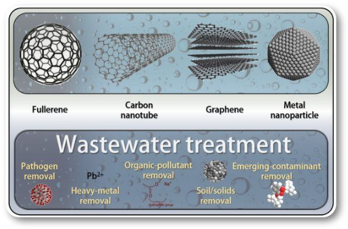